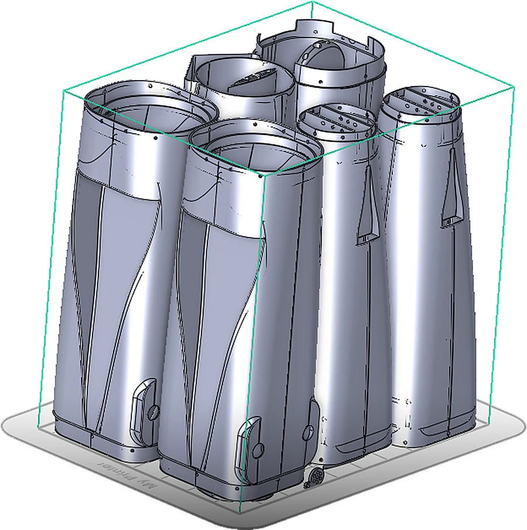

01
XYplano de capa
Lo crítico, en el plano de capa
Agujeros y pasadores con su diámetro en el plano XY, donde la resolución es máxima. Los esfuerzos principales también en XY, y las bisagras y clips nunca cargados en Z.
Guía de diseño para MJF
Orientación, espesor, separación y capa se deciden en el diseño, no al imprimir. Estas son las reglas que aplicamos, en línea con las guías que publica el propio fabricante de la tecnología para producir drones en MJF.

1 2 3Nuestra cuba
Agujeros y pasadores con su diámetro en el plano XY, donde la resolución es máxima. Los esfuerzos principales también en XY, y las bisagras y clips nunca cargados en Z.
Por encima de 10:1 una pieza tiende a alabearse. Se engrosa, se aligera con celosía, se suavizan los cambios de espesor y se evitan nervios en planos grandes.
Separación homogénea, piezas centradas y bajas, masas grandes lejos de las finas. Si hace falta, piezas sacrificiales alrededor como jaula térmica.
Rotar las piezas planas evita saltos bruscos de superficie entre capas y reparte mejor el calor de las lámparas.
Capa fina para encajes y mecanismos print-in-place; capa gruesa para ganar productividad cuando el detalle no manda. Entre un extremo y otro, el tiempo de impresión cambia en torno a un 15 % (orden de magnitud).
Las piezas finas se limpian con cuidado: una pistola demasiado cerca, o mucho tiempo en la misma zona, deja marcas de color. Se diseña y se procesa pensando en ello.
Calculadora
Mueve el espesor de pared y la desviación del contorno: en una pared fina, unas pocas micras son un porcentaje enorme de la pieza. Por eso las paredes finas se calibran con piezas representativas.
Pared gruesa: la desviación casi no se nota en el peso.
Pared fina: ya se nota. Conviene calibrar con piezas representativas.
Muy sensible: aquí la calibración del proceso lo decide todo.
Aproximación geométrica (las dos caras de la pared se desplazan): variación ≈ 2 × desviación ÷ espesor. Orden de magnitud, no una garantía.
Guía de defectos
Siguiente paso
Treinta minutos con nuestro equipo técnico: te enseñamos cómo pensamos el H-WING y cómo llevar tu diseño a MJF. Sin coste y sin compromiso.
NDA antes que nada: lo firmamos antes de ver tu primera especificación.
